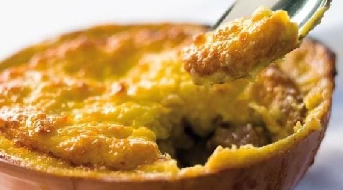

Pastel de Choclo

Description
From Wikipedia:
Pastel de choclo ("corn pie" or "corn cake") is a South American dish made from sweetcorn or choclo.
It is similar to the pastel de elote found in Mexican cuisine and to the English corn pudding.
The filling usually contains ground beef, chicken, raisins, black olives, onions, or slices of hard boiled egg.
Ingredients
For the filling:
- 1 whole chicken shredded, without skin
- 3 cups of chopped onion
- 1.5 lbs. or 750 grams. ground beef
- 3 teaspoons of olive oil
- 1 teaspoon dried oregano
- 2 to 3 garlic cloves, minced
- 2 teaspoons of salt, or to your liking
- Black pepper, to your liking
- 2 teaspoons of paprika
- A pinch of cumin powder
- Half a cup of raisins
- 10 pitted black olives
- 3 hard-boiled eggs, cut into 4 or 6 parts, lengthwise
For the crust:
- 12 cups of choclo or corn kernels, fresh or frozen
- 1 cup of cream
- 1 beaten egg
- 1 teaspoon of salt, or to your liking
- 1 pinch of ground black pepper
- 5 medium basil leaves, finely julienned
- 2 teaspoons of melted butter
- 8 teasppons of sugar
Steps
For the filling:
- In fying pan, saute onion and garlic in oil with the oregano, cumin, pepper, paprika, and salt.
- Cook until the onion is done. Then add the ground beef and cook one side until it's golden brown. Use a spatula to flip it and cook the meat on the other side.
- Once the beef is cooked, mix well, so you will avoid getting a watery mixture. Make the filling a day before the rest, and store in a refrigerator.
For the crust:
- Using a food processor or blinder, grind the corn into parts, adding a little bit of cream at a time, until getting a puree that's a smooth and homogeneous texture.
Cook this mixture in a saucepan, stirring constantly over a low heat.
- When this mixture has thickened, remove from the heat and add the beaten egg along with the melted butter, stiring until all the Ingredients
are well incorporated. Season with salt, pepper, basil, and save the crust for the next step.
Putting it all together:
- Preheat the oven to 375 F or 185 C.
- Butter a baking dish or if you prefer, 8 individual pots. Fill 1/3 of the baking dish or pot with the filling.
- Then add a layer of shredded chicken, then raisins, olives, and pieces of hard-boiled egg.
- finally, cover with the corn mixture. Add some granulated sugar on top for a traditional topping. Bake for approximately 35
minutes or until golden brown.
- Let it cool, then serve right away.